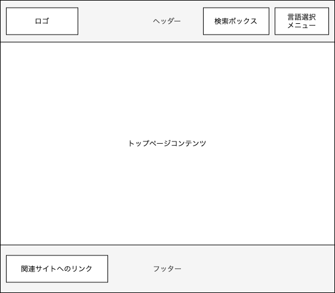
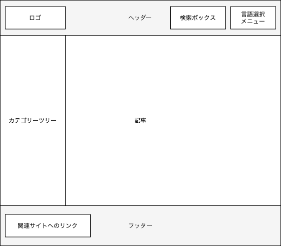
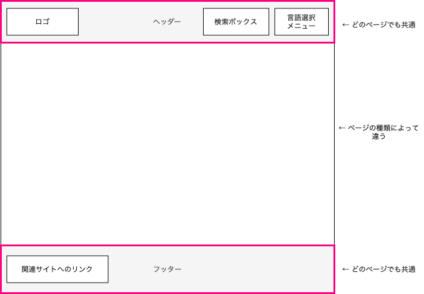
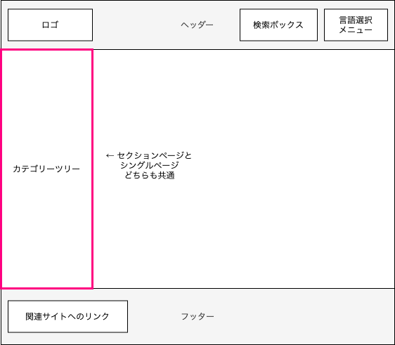

ドキュメントサイトのテンプレートを作る¶
実際にテーマテンプレートを作ってみましょう。
ゴール¶
次のワイヤフレームをもつサイトを作ります。
-
ホームページ（トップページ）)

-
セクションページ（記事一覧ページ）
-
シングルページ（記事ページ）

方針¶
共通部分を切り出してみましょう。
-
サイト全体に共通して、ヘッダーとフッターを含んでいます。

- ベーステンプレートを使って定義し、ページの種類によって中央部分の内容が変わるようにテンプレートを作ります。
- さらにテンプレートの記述をシンプルにするため、ヘッダーとフッターはパーシャルテンプレートとして部品化したものを呼び出したほうがよさそうです。
-
セクションページとシングルページを見比べると、カテゴリーツリーは共通しています。

- カテゴリーツリー部分も共通なので、パーシャルテンプレートとして部品化したものを呼び出すとよさそうです。